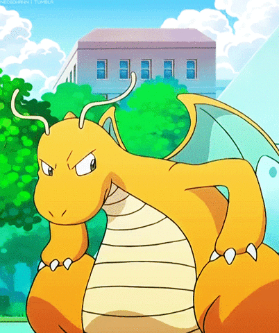
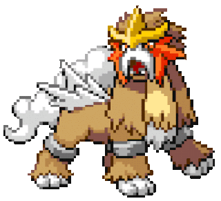
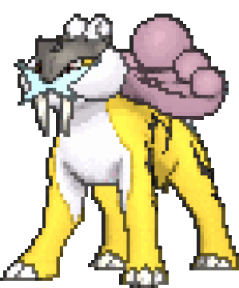

-
Bulbasaur #001

- grama
- veneno
ha uma semente em suas costas pior pokemon pra começar uma planta que anda, melhor escolher o charmander vira dragao no final
-
ivysaur #002

- grama
- veneno
Quando sua planta está pronta para desabrochar, ela emite um aroma adocicado para indicar sua floração.
-
Venusaur #003

- grama
- veneno
Há uma grande flor nas costas do Venusaur. Diz-se que a flor adquire cores vivas, caso receba muita nutrição e luz solar. O aroma da flor acalma as emoções das pessoas
-
charmander #004

- fogo
O fogo na ponta da cauda é uma medida de sua vida. Se saudável, sua cauda queima intensamente.
-
charmeleon #005

- fogo
Se ficar agitado durante a batalha, lança chamas intensas, incinerando seus arredores
-
charizard #006

- fogo
- voador
Cospe fogo quente o suficiente para derreter pedras. Pode causar incêndios florestais soprando chamas
-
squirtle #007

- agua
Ela se abriga em sua concha, e depois revida com esguicho de água a cada oportunidade. Ela se abriga em sua concha, e depois revida com esguicho de água a cada oportunidade.
-
wartotle #008

- agua
Geralmente esconde-se na água para perseguir presas descuidadas. Para nadar rápido, move os ouvidos para manter o equilíbrio
-
blastoise #009

- agua
Os jatos d'água que jorra dos canhões de foguetes em sua concha podem perfurar aço espesso
-
carterpie #010

- inseto
É coberto com uma pele verde. Quando cresce, deixa cair a pele, se cobre com seda e se torna um casulo.
-
Dragonite #011
- dragao
- voador
O dragonite é conhecido por ser muito forte, e de ser usado constantemente na elite four, onde lance tem um dragonite muito forte e com certeza não tem medo de usar. Dragonite é o pokémon número #149 na national dex, mas pouco importa. O dragonite agora é um dragão, finalmente!.
-
Entei #012
- fogo
Entei personifica a paixão do magma. Acredita-se que este Pokémon tenha nascido na erupção de um vulcão. Ele envia enormes rajadas de fogo que consomem totalmente tudo o que tocam.
-
Raikou #013
- Eletrico
Raikou é o numero 243 da Pokédex, sendo o sexto lendário da lista. Ele é o Pokémon eletrizante, sendo do tipo Elétrico. Pesa cerca de 178 kg e mede cerca de 1,9 m. Seus pontos fortes são sua Velocidade e o seu Super Ataque
-
RaiQuaza #014

- dragao
- voador
Dizem que Rayquaza viveu centenas de milhões de anos. Lendas permanecem de como ele pôs fim ao confronto entre Kyogre e Groudon.